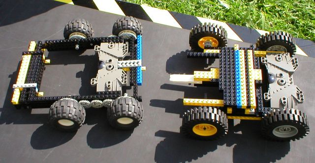

First |
Previous Picture |
Next Picture |
Last | Thumbnails
Note that because of gearing, the controller in one is facing the opposite direction. The DJ (with the gearing on the left) has gearing down, and four wheel drive - a clear pushing advantage. The GD on the right may have a speed advantage since it doesn't gear down.
